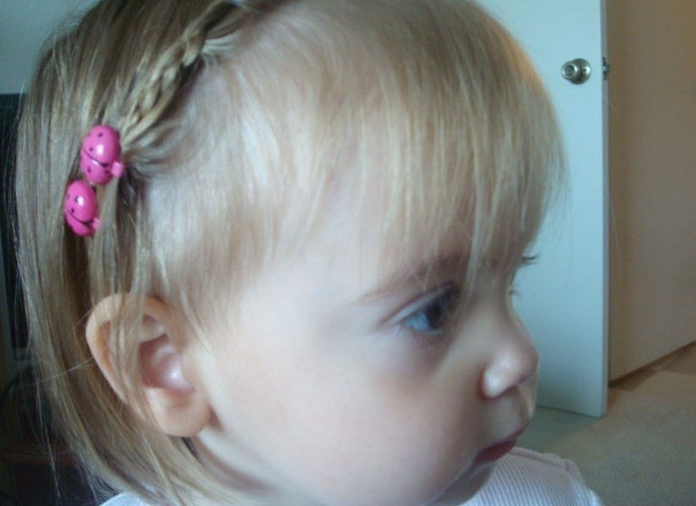

ADOSEN - Santé, Solidarité, Citoyenneté
 Faire un don Accueil Qui sommes-nous ? Interventionsen classe Ressources
pédagogiques Outils pédagogiques Matériel pédagogique Valorisation des
projets pédagogiques Appel à projets pédagogiques Projets Lauréats Actualités Actualités Concours Dossiers /
Campagnes Nous rejoindre Découvrez l’ADOSEN à travers la vidéo de l’Assemblée Générale 2020
Regarder
Actualités
31 Mars 2021 Lancement du concours de scénarios Stéréotypes Stéréomeufs Saison 4 26 Mars 2021 Intervention sur le thème de l’égalité fille/garçon dans les Côtes d’Armor avec Sloane et Anaïs Intervention en classe 22 Mars 2021 La région du mois : la Réunion ! La région du mois 19 Mars 2021 Intervention sur la thématique du consentement et de la sexualité en Ile de France Intervention en classe 12 Mars 2021 Intervention sur l’égalité fille-garçon à la Réunion avec Célie et Mathilde Intervention en classe Voir + d'articlesChiffres clés
9 Partenaires 198 Activités pédagogiques 87 Projets soutenus 5 Campagnes nationalesS'engager
Les thématiques de santé, solidarité et citoyenneté vous intéressent ?
Vous souhaitez vous rendre utile et vous engager aux côtés de l’ADOSEN pour sensibiliser et promouvoir les sujets qui vous tiennent à coeur auprès de la communauté éducative ?
Rejoignez nous à l’ADOSEN en devenant bénévole, volontaire en service civique ou salarié.e.
S'engager
Des questions ?
Nous sommes disponibles pour répondre à vos questions,
vos demandes de renseignement, vos suggestions.
Adosen
Actualités Outils pédagogiques Valorisation des projets Qui sommes-nous ?Ressources
Dossiers Filgood Où est Alice ? La campagne du momentContact
Contactez-nous Twitter Facebook Linkedin Instagram Mentions légalesFaire un don
Vous êtes nombreux à vous engager régulièrement à nos côtés, autour des valeurs de santé, solidarité et citoyenneté pour la jeune génération et nous vous en remercions. Grâce à vos dons, nous continuons à répondre à notre objet social : outiller et accompagner la communauté éducative afin d’aider les élèves à s’émanciper et à appréhender les évolutions de notre société. En renforçant notre présence et nos capacités d’agir, nos interventions et outils pédagogiques ont pu bénéficier à près de 400 000 élèves.
Grâce à vos dons, nous avons pu conforter nos thématiques déjà existantes, notamment grâce à un concours de promotion au don du sang et en développer de nouvelles. L’association a poursuivi le financement et l’accompagnement des projets pédagogiques d’établissements scolaires. Nous avons ainsi pu soutenir 87 initiatives du personnel éducatif, toutes aussi engagées et engageantes, à travers toute la France. Chaque nouvelle année qui passe nous montre l’étendue du chemin parcouru.
C’est grâce à vous et à votre soutien que nous évoluons, grandissons et touchons un public de plus en plus large. Pour tout cela et plus encore, merci infiniment. Notre organisme est soumis à différents contrôles de ses comptes, de sa gouvernance et de son fonctionnement, garantissant la bonne utilisation de vos dons. Par ailleurs, l’entrée en vigueur du prélèvement à la source de l’impôt sur le revenu n’empêchera pas la réduction fiscale liée à votre don pour l’ADOSEN.
66% du montant des dons faits à l’Adosen est déductible de vos impôts, dans la limite de 20% de votre revenu imposable. A la suite de votre don, vous recevrez un reçu fiscal, vous permettant d’attester de votre don auprès de l’administration fiscale.Montant du don
10€ 3€ après impôts 20€ 6€ après impôts 30€ 10€ après impôts 50€ 17€ après impôts 100€ 34€ après impôts Valider le montant